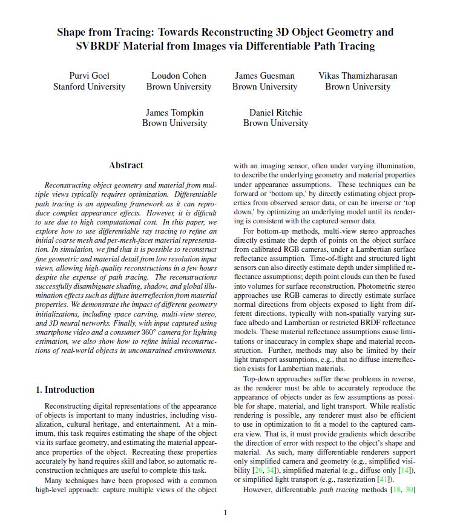
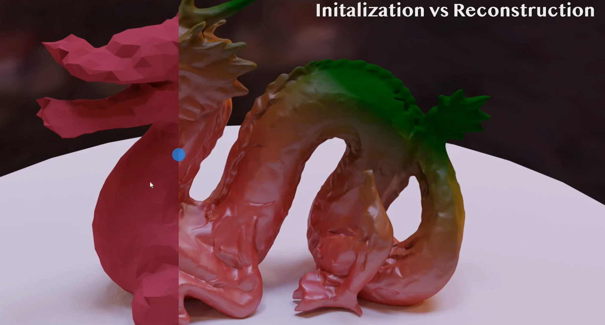

Shape from Tracing: Towards Reconstructing 3D Object Geometry and SVBRDF Material from Images via Differentiable Path Tracing
Purvi Goel, Loudon Cohen, James Guesman, Vikas Thamizharasan,
James Tompkin, and Daniel Ritchie
3DV 2020

Abstract
Reconstructing object geometry and material from multiple views typically requires optimization. Differentiable path tracing is an appealing framework as it can reproduce complex appearance effects. However, it is difficult to use due to high computational cost. In this paper, we explore how to use differentiable ray tracing to refine an initial coarse mesh and per-mesh-facet material representation. In simulation, we find that it is possible to reconstruct fine geometric and material detail from low resolution input views, allowing high-quality reconstructions in a few hours despite the expense of path tracing. The reconstructions successfully disambiguate shading, shadow, and global illumination effects such as diffuse interreflection from material properties. We demonstrate the impact of different geometry initializations, including space carving, multi-view stereo, and 3D neural networks. Finally, with input captured using smartphone video and a consumer 360 camera for lighting estimation, we also show how to refine initial reconstructions of real-world objects in unconstrained environments
Presentation Video
Files
|  |  | |
|
Paper PDF 48 MB | arXiv |
Supplementary PDF 18 MB |
Short Video MP4 5 MB |
Bibtex
@inproceedings{,
author = "Purvi Goel, Loudon Cohen, James Guesman, Vikas Thamizharasan, James Tompkin, and Daniel Ritchie",
title = "Shape from Tracing: Towards Reconstructing 3D Object Geometry
and SVBRDF Material from Images via Differentiable Path Tracing",
booktitle = "3DV",
year = "2020",
url = ""
}
Source Code
Acknowledgements
We would like to thank the anonymous reviewers for the thoughtful and helpful suggestions. We also thank Prof. Min H. Kim for discussions about object capture and reconstruction, and Tzu-Mao Li for discussions about differentiable path tracing. This research was supported by GPU donations from NVIDIA and computer donations from Valve Corporation.

|
|